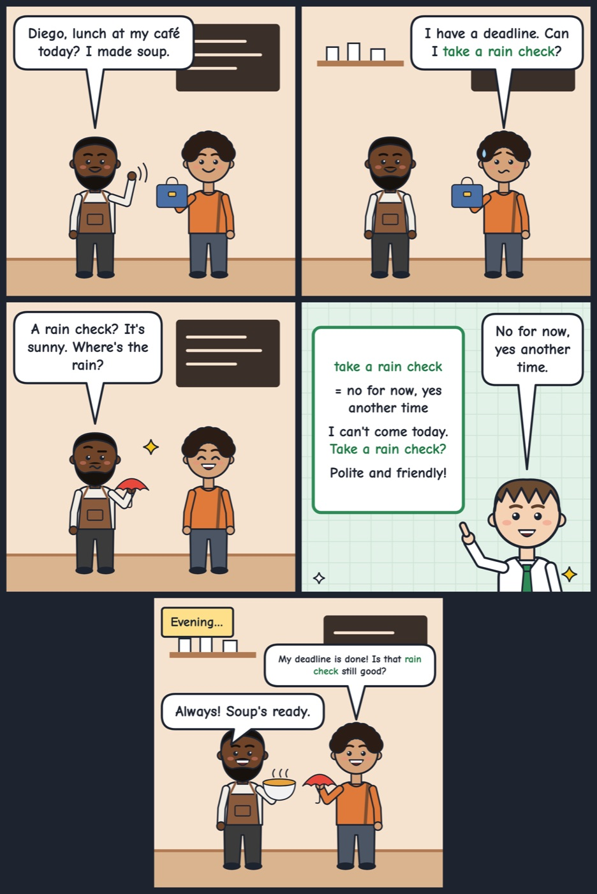

take a rain check
To say no to an invitation now and suggest doing it another time.
I can't come to lunch today. Can I take a rain check?
Tip: Say 'Can I take a rain check?' or 'I'll take a rain check' to decline politely now while showing you still want to do it later; don't use it if you never want to go.
Hear it in conversation
Workbook
1. What does it mean?
In this conversation, what does 'take a rain check' mean?
2. Fill the gap
Thanks for inviting me to the gym tonight, but I'm exhausted. Can I ?
3. Choose the best reply
Amira: We're having a few friends over on Saturday. Can you make it?
4. Your turn: speak
Tell me about a time you had to say no to an invitation. How did you handle it?
Show an example answer
A friend invited me to a concert last month, but I had an important exam the next morning. I told her I'd have to take a rain check, and I suggested going out for dinner the following weekend instead. She understood, and we had a great evening together.
Answer key: take a rain check
- 1. D. Say no to the invitation now, but suggest going another time
- 2. take a rain check
- 3. C. Sorry, I'm away that weekend. Can I take a rain check?
- 4. Example: A friend invited me to a concert last month, but I had an important exam the next morning. I told her I'd have to take a rain check, and I suggested going out for dinner the following weekend instead. She understood, and we had a great evening together.
See it in a comic
